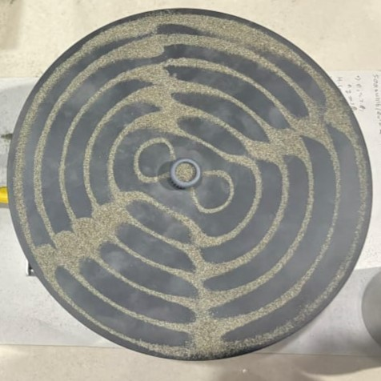
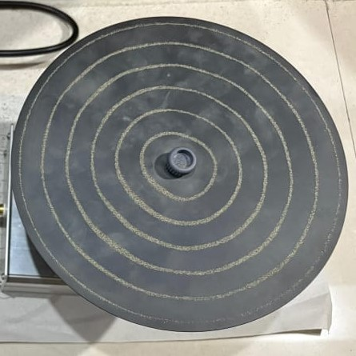
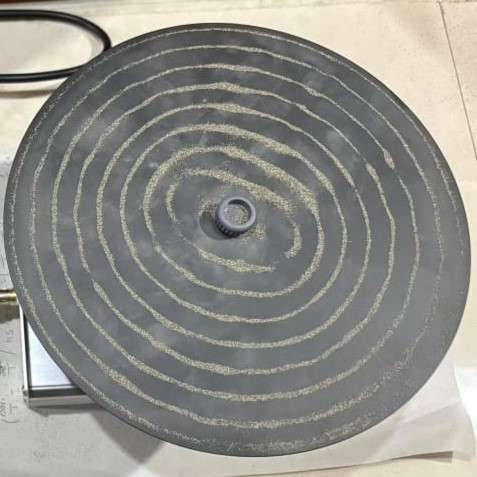
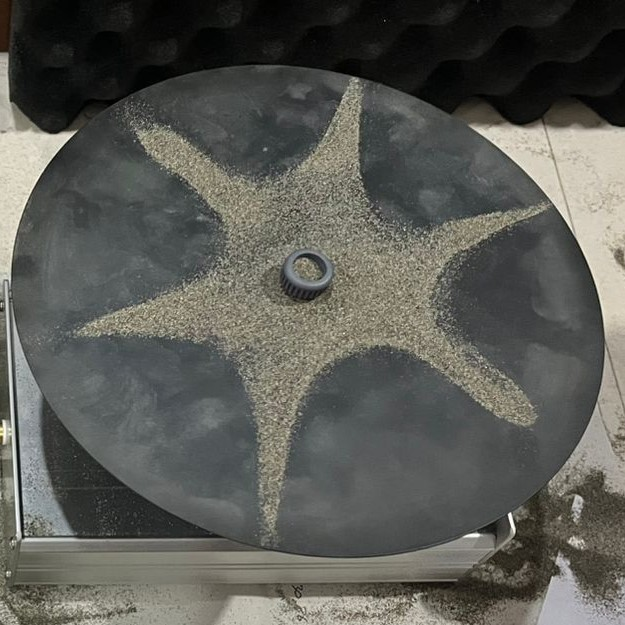
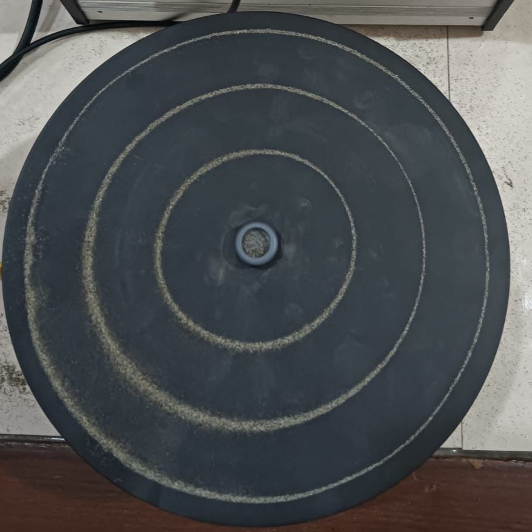
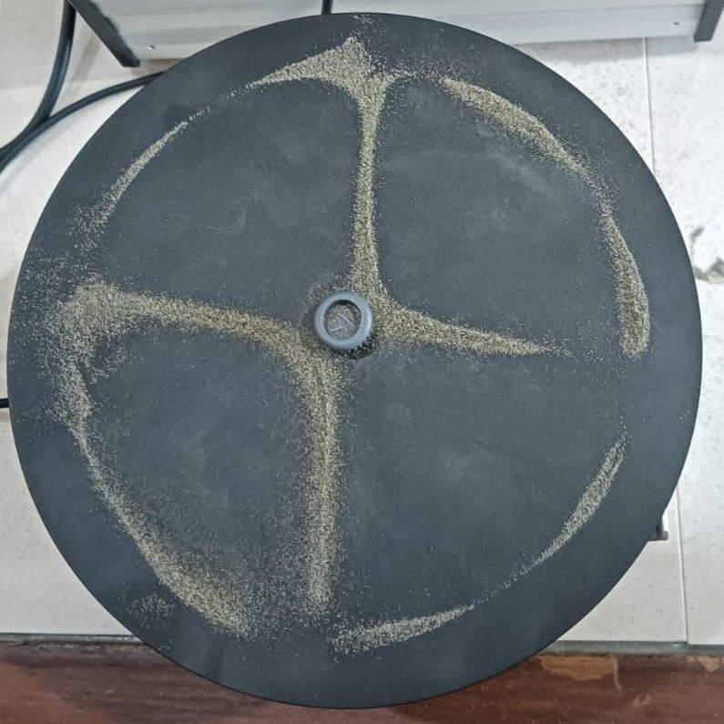
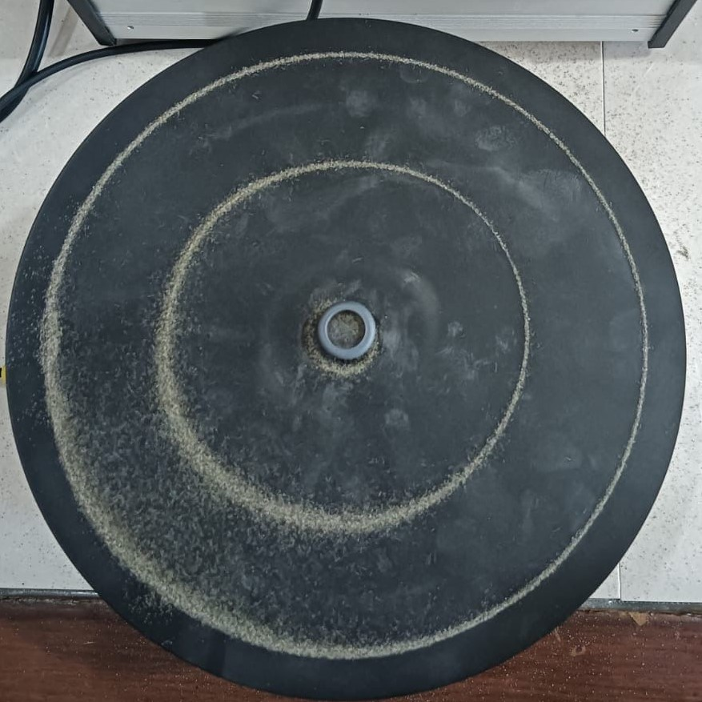
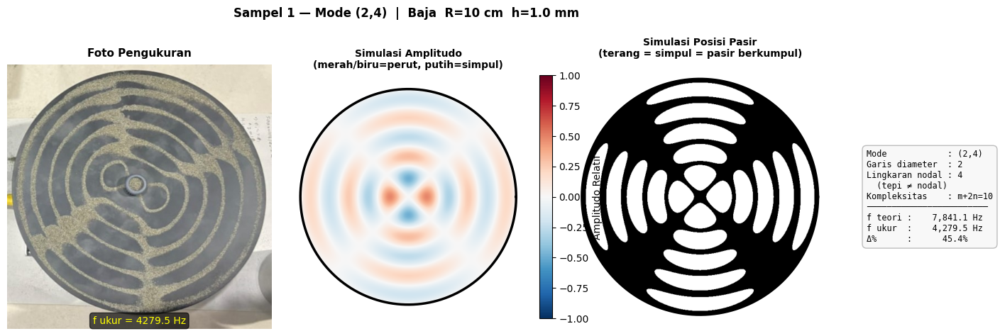
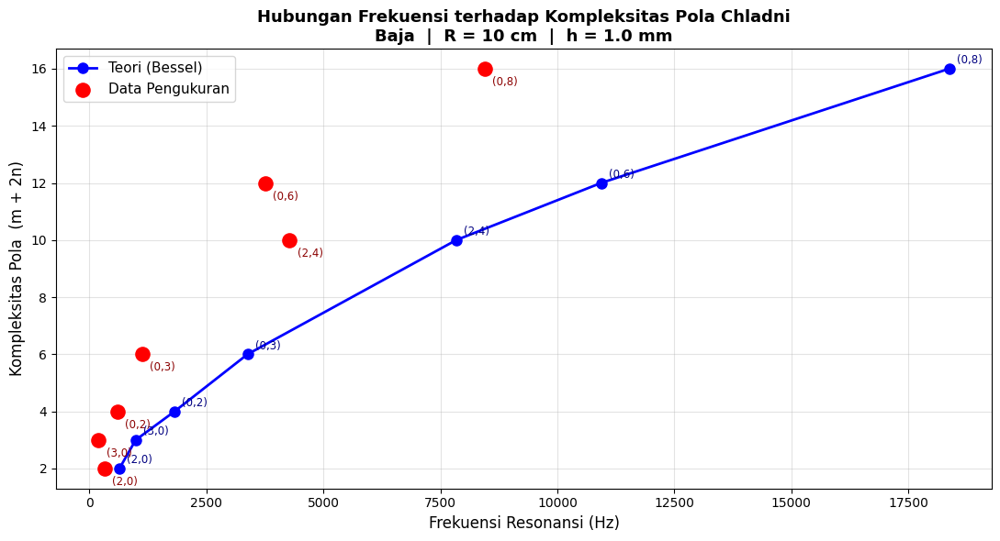

Pola Chladni: Tarian Pasir Gelombang Berdiri
KELOMPOK 2
Departemen Fisika
Institut Teknologi Sepuluh Nopember

Departemen Fisika
Institut Teknologi Sepuluh Nopember

Latar belakang, Tujuan percobaan, dan Batasan masalah
Dasar Teori
Skema Alat dan Diagram Alir
Analisis data, Hasil Perhitungan, Grafik, dan Pembahasan
Kesimpulan
Dalam kehidupan sehari-hari, fenomena muatan listrik dapat teramati mulai dari rambut yang berdiri akibat penggaris plastik hingga cara kerja printer dan mesin fotokopi, yang semuanya membuktikan bahwa muatan listrik memiliki peran fundamental dalam teknologi modern.
Gaya apung adalah gaya ke atas yang bekerja pada benda yang dicelupkan sebagian atau seluruhnya ke dalam fluida (zat cair atau gas).
Gaya gravitasi adalah gaya tarik-menarik yang terjadi antara dua benda yang memiliki massa.
Gaya apung adalah gaya ke atas yang bekerja pada benda yang dicelupkan sebagian atau seluruhnya ke dalam fluida (zat cair atau gas).


| No | Parameter | Nilai | Satuan |
|---|---|---|---|
| 1 | Diameter plat \((D)\) | 20 | cm |
| 2 | Jari-jari plat \((R = D/2)\) | 10 | cm |
| 3 | Ketebalan plat \((h)\) | 1 | mm |
| 4 | Material plat | Baja | - |
| No | \(f(Hz)\) | Mode (m, n) | Jumlah Garis | Jumlah Lingkaran | Gambar | Deskripsi Pola |
|---|---|---|---|---|---|---|
| 1. | 4279.5 | (2, 4) | 2 | 4 |  | Terdapat 4 lingkaran dan 2 garis silang yang hampir saling berpotongan |
| 2. | 3758.5 | (0, 6) | 0 | 6 |  | Terdapat 6 lingkaran |
| 3. | 8446.5 | (0, 8) | 0 | 8 |  | Terdapat 8 lingkaran |
| 4. | 195.8 | (3, 0) | 3 | 0 |  | Terdapat 3 garis silang |
| No | \(f(Hz)\) | Mode (m, n) | Jumlah Garis | Jumlah Lingkaran | Gambar | Deskripsi Pola |
|---|---|---|---|---|---|---|
| 5. | 1124 | (0, 3) | 0 | 3 |  | Terdapat 3 lingkaran |
| 6. | 325 | (2, 0) | 2 | 0 |  | Terdapat 2 garis silang |
| 7. | 596 | (0, 2) | 0 | 2 |  | Terdapat 2 lingkaran |
Contoh persamaan dan perhitungan :
Diketahui:
\(R = 0.10\; \text{m}\)
\(h = 0.001\; \text{m}\)
\(E = 200 \times 10^{9}\; \text{Pa}\)
\(\rho = 7800\; \text{kg/m}^3\)
\(\nu = 0.29\)
mode (m, n) = (0, 6)
\(D=\frac{Eh^3}{12(1-\nu^2)}\)
\(D=\frac{(200\times10^9)(0.001)^3}{12(1-(0.29)^2)}\)
\(D=18.19 Nm\)
\((m ,n) = (0, 6)\)
\(\lambda_{06}=21.2116\)
\(f_{mn}=\frac{(\lambda_{mn})^2}{2\pi(R)^2}\sqrt{\frac{Eh^3}{12\rho(1-\nu^2)}}\)
\(f_{06}=\frac{(21.2116)^2}{2\pi(0.10)^2}\sqrt{\frac{(200\times10^{9})(0.001)^2}{12(7800)(1-0.29^2)}}\)
\(f_{teori}=10937.6 Hz\)
\(Error\%=\left|\frac{f_{teori}-f_{ukur}}{f_{teori}}\right|\times100\%\)
\(Error\%=\left|\frac{10937.6-3758.5}{10937.6}\right|\times100\%\)
\(Error\%=65.6\%\)
| No | Gambar Hasil Pengukuran dan Simulasi |
|---|---|
| 1 |  |
| : | : |
| 7 | 7 |

Grafik Hubungan Frekuensi terhadap Kompleksitas Pola Chladni